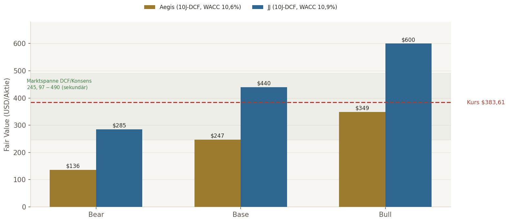
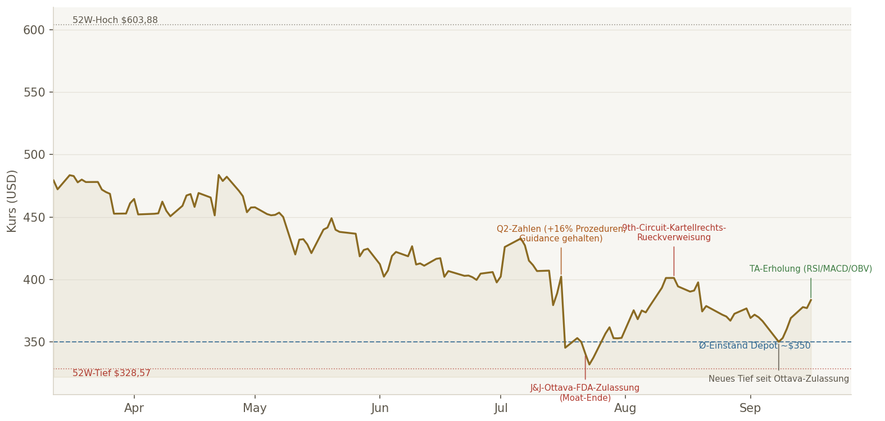
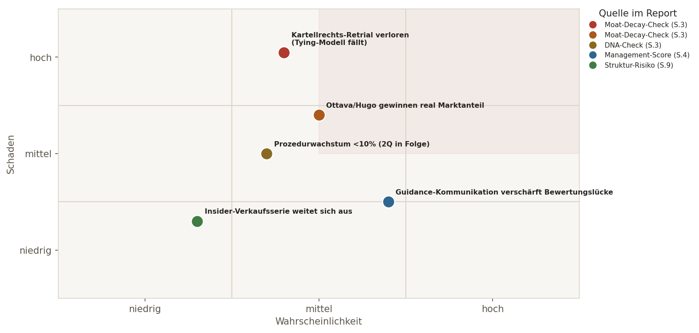

Der Auslöser. Der Quick-Filter vom 25.08.2026 fand eine exzellente, aber nur einzelquellen-belegte DNA und eine eklatante, unaufgelöste Bewertungs-Diskrepanz (Morningstar-Fair-Value $265 vs. Sell-Side-Konsens bis $509) — und forderte explizit einen Full Deep Dive mit echtem DCF und Zweitquellen-Verifikation, bevor eine höhere Konviktion gerechtfertigt wäre.
Der Doppelangriff auf den Moat. Zwei unabhängige strukturelle Ereignisse laufen gleichzeitig: J&J erhielt am 22.07.2026 die FDA-Zulassung für Ottava und beendete damit Intuitives ~2 Jahrzehnte währendes Soft-Tissue-Regulierungsmonopol; der 9th Circuit Court of Appeals hob am 13.08.2026 das vorherige Urteil zugunsten Intuitive im Kartellrechtsstreit um das Tying-Modell (System+Service an Instrumentenkäufe gekoppelt) auf und verwies zur Neuverhandlung zurück — Streitwert ca. $140 Mio., Kernvorwurf trifft direkt die Recurring-Revenue-Ökonomie.
Was der Full Deep Dive klärt. Die DNA verifiziert sich zweitquellen-bestätigt als exzellent (ROIC ~20%, FCF-Marge 25-33%, praktisch schuldenfrei mit $8,63 Mrd. Netto-Cash). Die Bewertungs-Diskrepanz löst sich als Funktion unterschiedlicher, aber jeweils in sich schlüssiger DCF-Annahmen auf, nicht als Modellfehler einer Seite — Details Seite 5-6. Ein eigener, wichtiger Fund: JJ korrigierte einen über ein Jahr alten Fehler in unserer eigenen Quick-Filter-Analyse (CEO-Wechsel bereits 01.07.2025, siehe Seite 4).
Der Cross-Check-Befund. Diese Runde lief als 2-fach-Check (Aegis + JJ) — der OpenAI-Bridge (Conan) war während der gesamten Sitzung nicht erreichbar, der dritte bestätigte Ausfall in Folge an diesem Tag. Beide verbleibenden Perspektiven konvergieren auf HALTEN.
HALTEN
Konfidenz 🟡, kein Nachkauf vor Rechtsstreit-/Wettbewerbsklärung
HOLD
Score 7/10, Konfidenz 🟡 (von 🔴 im Quick-Filter angehoben)
— nicht erreichbar —
OpenAI-Bridge-Ausfall (3. Mal in Folge, siehe Seite 12)
Intuitive Surgical bleibt fundamental einer der stärksten Compounder im gesamten Depot: praktisch schuldenfrei, ROIC ~20%, FCF-Marge 25-33%, ein Moat, der trotz zwei realer struktureller Angriffe immer noch bei 3/4 liegt. Aber: beide Angriffe (Kartellrechts-Retrial, Ottava/Hugo-Marktöffnung) sind ECHT, laufend und nicht kurzfristig auflösbar — kein Grund zur Panik, aber auch kein Grund für Euphorie. Die DCF-Bewertung zeigt eine ungewöhnlich breite, aber methodisch nachvollziehbare Streuung ($136-650 je Szenario/Modell) — der aktuelle Kurs liegt zwischen den beiden unabhängigen Base-Cases. Ein Nachkauf ist erst gerechtfertigt, wenn sich mindestens einer der beiden zentralen Unsicherheitsfaktoren klärt.
DNA jetzt zweitquellen-verifiziert exzellent, praktisch schuldenfrei ($8,63 Mrd. Netto-Cash), Moat trotz Abzug bei 3/4, disziplinierte Kapitalallokation, TA-Erholung der letzten Woche (RSI/MACD/OBV).
Kartellrechts-Retrial ohne Termin, Ottava/Hugo-Bedrohung langfristig real, Insider verkaufen (keine Käufe 90 Tage), Kurs bleibt unter SMA200 trotz kurzfristiger Erholung, DCF-Streuung historisch ungewöhnlich breit.
Q3-2026-Earnings (20.10.), jedes prozessuale Update im Kartellrechtsverfahren, reale Marktanteilsverschiebung Ottava/Hugo, Insider-Transaktionen, Guidance-Ton am nächsten Call.
HALTEN. Bestehende 4-Aktien-Position bleibt unverändert. Kein methodischer Nachkauf vor Klärung von Rechtsstreit oder Wettbewerbsdynamik.
| Kriterium | Schwelle | Ist-Wert (Zweitquellen-verifiziert) | Status |
|---|---|---|---|
| K-Kriterien (Gatekeeper) | |||
| ROIC | >20% | 19,96-20,73% (GuruFocus/FinanceCharts) — knapp, aber erfüllt | ✅ Erfüllt |
| FCF-Marge (real) | ≥20% | 24,7-32,79% je Quelle/Periode | ✅ Deutlich erfüllt |
| Operativer Leverage | Ja/Nein | Ja — Q2 Op.-Gewinn +30,7% bei Umsatz +18,5% | ✅ Erfüllt |
| Piotroski F-Score | ≥7 | 6/9 (10-Jahres-Median, Branchen-Ø 5,0) — Zweitquelle bestätigt Quick-Filter-Wert | 🟡 Grenzfall, kein Alarmsignal |
| EPS-CAGR (5J) | ≥12% | 19,5-21,5% je Quelle | ✅ Deutlich erfüllt |
| E-Kriterien | |||
| Bruttomarge | ≥60% | 66,0-67,8% je Periode | ✅ Erfüllt |
| Op. Margin | ≥20% | 29,3-33,6% je Periode | ✅ Erfüllt |
| Revenue-CAGR (5J) | ≥8-10% | 16,4-18,2% | ✅ Deutlich erfüllt |
| Net Debt/EBITDA | <2,0x | 0,00x — praktisch schuldenfrei, $8,63 Mrd. Netto-Cash | ✅ Erfüllt, sehr stark |
| Capex/Umsatz | ≤5% | 4,39% TTM | ✅ Erfüllt |
| CCC | <30 Tage | ~233 Tage — für Medtech-Kapitalgüter (lange Fertigungs-/Lager-/Zahlungszyklen) strukturell normal, kein Substanzproblem | 🟡 Branchentypische Ausnahme |
DNA-Urteil: K praktisch 5/5, E praktisch 6/6 (beide 🟡-Zeilen branchentypisch erklärt, kein Substanzproblem) — deutlich gestärkt ggü. dem Quick-Filter (K 4/5 Grenzfall), weil beide fraglichen Kennzahlen jetzt zweitquellen-verifiziert und kontextualisiert sind.
(a) J&J-Ottava-FDA-Zulassung (22.07.2026): beendet Intuitives ~2 Jahrzehnte währendes Soft-Tissue-Regulierungsmonopol. CFO Jamie Samath sagte im September 2026, J&J werde "ein paar Jahre" brauchen, um gegen Intuitives volles Ökosystem zu skalieren — stützt eine kurzfristige Entlastung, ohne die langfristige Bedrohung zu widerlegen. Medtronic Hugo bleibt marktseitig nachrangig. (b) 9th-Circuit-Kartellrechts-Rückverweisung (13.08.2026): Urteil zugunsten Intuitive aufgehoben (fehlerhafte Kodak/Epic-Jury-Instruktion), Neuverhandlung zum Tying-Modell (System+Service an Instrumentenkäufe gekoppelt) — Streitwert ~$140 Mio., trifft direkt die Recurring-Revenue-Ökonomie. Kein öffentlich bekannter Retrial-Termin. Moat-Score: 3/4 (von 4/4 abgestuft) — Moat-Trend LEICHT ABSCHWÄCHEND, nicht STARK ERODIEREND: beide Angriffe sind real, aber weder kurzfristig entscheidungsreif noch bereits in Marktanteilsverlusten sichtbar.
Gary Guthart ist bereits seit dem 01.07.2025 nicht mehr CEO von Intuitive Surgical — er wechselte zu Executive Chair. Neuer CEO ist Dave Rosa. JJ fand dies eigenständig, Aegis hat es unabhängig per WebSearch (u.a. medtechdive.com, intuitive.com/leadership) bestätigt. Der eigene Quick-Filter vom 25.08.2026 hatte fälschlich noch "CEO Gary Guthart (seit 2010)" geführt — ein unbemerkt gebliebener, über ein Jahr alter Fakt-Fehler in unserer eigenen vorherigen Analyse, kein Fund dieser Runde selbst. Ab jetzt korrigiert für alle künftigen ISRG-Analysen.
| Key Success Factor (Roboterchirurgie-Branche) | ISRG-Positionierung | Status |
|---|---|---|
| Regulatorische Zulassungsbreite über Fachgebiete | Breiteste FDA-Zulassungspalette der Branche nach 2 Dekaden Aufbau | ✅ DEFENSIV |
| Chirurgen-Ausbildungs-/Zertifizierungs-Ökosystem | Größte trainierte Chirurgenbasis weltweit, hohe Wechselkosten | ✅ DEFENSIV |
| Rechtssicherheit des Aftermarket-/Tying-Modells | Kartellrechts-Retrial läuft, Ausgang offen, trifft den Kern der Marge | ❌ KRITISCH/OFFEN |
| Krankenhaus-Capex-Zyklen/Kaufentscheidungsprozesse | Lang, komplex — da Vinci 5 als Upgrade-Pfad, aber Wettbewerber könnten Zyklen beeinflussen | 🟡 IN ARBEIT |
| Dateneigentum/KI-Integration in OP-Workflows | Aktive Investition, große Datenbasis aus installierter Flotte | ✅ DEFENSIV |
| Innovationsgeschwindigkeit/Technologie-Roadmap | da Vinci 5, Ion Endoluminal System als laufende Weiterentwicklung | ✅ DEFENSIV |
Die einzige ❌-Zeile ist exakt der Punkt, der auch das zentrale Struktur-Risiko (Seite 9) und den Moat-Decay-Check (Seite 3) trägt — keine isolierte Schwäche, sondern der zentrale, wiederkehrende Unsicherheitsfaktor der gesamten Analyse.
Positiv: disziplinierte Kapitalallokation (hohe Reinvestition in F&E/Ökosystem-Ausbau, Aktienrückkäufe, Share-Count leicht rückläufig 357→354 Mio. seit 2023), Guidance-Zurückhaltung trotz Q2-Beat als umsichtige statt fehlerhafte Kommunikation eingeordnet, transparente Ansprache von Ottava/Hugo/Rechtsstreit in Calls ohne erkennbaren Dodge-Factor.
Abzug: Insider-Verkäufe überwiegen klar (~$4,5-4,9 Mio. Verkäufe, keine Käufe in 90 Tagen) — kein akutes Warnsignal, aber ein Beobachtungspunkt, gerade während der laufenden Rechtsstreit-Unsicherheit.
| Bein | Beta | WACC | Bear-FV | Base-FV | Bull-FV | TV-Anteil EV (Base) |
|---|---|---|---|---|---|---|
| Aegis | 1,30 | 10,60% | $136 | $247 | $349 | 57,8% |
| JJ | 1,16 | 10,88% | $250-320 | $420-460 | $550-650 | 60-80% (geschätzt) |
Wichtiger methodischer Fund (Aegis-Selbstkorrektur): Ein erster Durchlauf mit nur 5 Jahren explizitem Cashflow-Horizont ergab absurd niedrige Werte (Base $169, Reverse-DCF implizit 34,9% nötiges Wachstum) — ein Artefakt eines zu kurzen Prognosehorizonts, kein reales Bewertungsurteil. Nach Korrektur auf 10 Jahre (wie JJ) sinkt das implizite Reverse-DCF-Wachstum auf 17,1% p.a. — nah an ISRGs eigener Wachstumsrate (Prozeduren +16% YoY) und damit plausibel. Die Wahl des Prognosehorizonts ändert das Ergebnis stärker als jede realistische WACC- oder Wachstumsraten-Anpassung.
Aegis' konservativere FCF-Margen-Progression (27%→31%) erklärt den größten Teil der Differenz zu JJs Zahlen (konstant ~25%, aber mit optimistischerer Wachstumsrate) — beide Modelle sind in sich schlüssig, nicht widersprüchlich in der Methodik. Aegis' Werte dienen als konservative Bear-seitige Leitplanke, nicht als Punktschätzung, da ISRGs reale TTM-FCF-Marge bereits bei 29-33% liegt.
Weder Aegis noch JJ konnten eine explizite Rückstellung oder eine quantifizierte OCF-Belastung durch die beiden laufenden Kartellrechtsverfahren (zertifizierte Sammelklage 2017-2021 + 9th-Circuit-Fall) aus öffentlich zugänglichen Quellen finden — Management erwähnte im Q1-2026-Call "niedrigere Rechtskosten", ohne Beträge zu nennen [N/V]. Bei einem Streitwert von ~$140 Mio. gegen eine Marktkapitalisierung von ~$135 Mrd. wäre selbst eine vollständige Verlustzahlung finanziell verkraftbar (<0,1% der Marktkap.) — das eigentliche Risiko ist nicht die Zahlungshöhe, sondern ein mögliches Präzedenzurteil gegen das Tying-Modell selbst, das die Recurring-Revenue-Ökonomie strukturell verändern könnte.
| Position | Wert | Einordnung |
|---|---|---|
| Netto-Cash (30.06.2026) | $8,63 Mrd. | Praktisch schuldenfrei, mehrquellenbestätigt |
| Net Debt/EBITDA | 0,00x | Keine signifikanten langfristigen Schulden |
| Share Count (2023→Q2 2026) | 357 Mio. → 354 Mio. | Leicht rückläufig, keine Verwässerung |
Verwässerungs-Wasserfall: entfällt ersatzlos. Keine gleichzeitigen dilutiven Instrumente, Share-Count-Trend leicht rückläufig.

Einordnung: Der aktuelle Kurs ($383,61) liegt zwischen Aegis' konservativem Base-Case ($247) und JJs optimistischerem Base-Case ($420-460) — deutlich näher an JJs Zahlen. Das spricht dafür, dass der Markt aktuell eher die optimistischere Lesart einpreist (Moat hält trotz der beiden Angriffe im Kern), nicht die pessimistische. Selbst Aegis' Bull-Case ($349) erreicht den aktuellen Kurs nicht ganz — ein Hinweis darauf, dass die Bewertung nicht mehr "billig" ist, auch nach dem -36%-Rückgang vom Hoch, sondern auf eine erfolgreiche Bewältigung beider struktureller Risiken angewiesen bleibt.

| Kurs vs. SMA200 | $383,61 vs. $456,93 | Klar unter SMA200 |
| RSI(14) | 56,1 (erholt von ~35 am 08.09.) | Neutral, kurzfristig erholt |
| MACD | -1,75, Signal -3,57, Hist. +1,82 (dreht seit 5 Tagen positiv) | Kurzfristig bullische Divergenz |
| Bollinger | $383,61, über Mittelband ($371,64), unter oberem Band ($391,50) | Erholung Richtung Bandmitte |
| OBV-Trend | Wechsel von negativ (08.09.) zu klar positiv (16.09.) | Käuferrückkehr |
| ATR(14) / ATR% | $11,74 / ~3,1% | Moderat |
Kurzfristig ERHOLEND, langfristig BEARISH
Kurs unter SMA200, aber RSI/MACD/OBV zeigen unabhängig übereinstimmend eine echte, junge Erholung der letzten Woche.
JJs sekundäre TA-Quellen (TipRanks u.a.) zeigten noch MACD -6,10 und RSI 37-42 — ein älterer Datenstand. Twelve Data bleibt ausnahmslos die Referenz für TA-Werte.
Bear: Kartellrechts-Retrial verloren, Tying-Modell für wettbewerbswidrig erklärt → Zerschlagung des Recurring-Revenue-Modells, niedrigere Instrumentenpreise, höhere Servicekosten. Zusätzlich: Ottava/Hugo überwinden Anlaufschwierigkeiten schneller als erwartet, gewinnen realen Marktanteil bei einfacheren Eingriffen, Preisdruck auf da-Vinci-Systeme. Prozedurwachstum fällt unter 10%.
Base: Moderat verlangsamtes, aber weiterhin zweistelliges Wachstum, Moat hält mit Reibungsverlusten durch Wettbewerb/Rechtsstreit, kein binäres Ereignis in beide Richtungen bis mindestens Q3-2026.
Bull: Rechtsstreit wird beigelegt oder zugunsten Intuitive entschieden, Tying-Modell bleibt unangetastet. Ottava/Hugo scheitern dauerhaft an Skalierung/Workflow-Integration. Beschleunigtes Wachstum durch da Vinci 5 und internationale Expansion.
| Datum | Event | Relevanz |
|---|---|---|
| 20.10.2026 | Q3-2026-Earnings, Konsens-EPS $2,64 | Nächster harter Datenpunkt für Prozedurwachstum/Guidance |
| Laufend | da Vinci 5 / Ion Endoluminal System | Upgrade-Zyklus im Bestand, neue Indikationen |
| Laufend, kein Termin | 9th-Circuit-Retrial | Kein öffentlich bekannter Termin — bleibt offene Unsicherheit |
Rechtsstreit: siehe Seite 3/5, kein neuer Verfahrensstand seit dem 13.08. auffindbar. Ottava/Hugo: "gemessene" Markteinführung laut mehreren Quellen, CFO Samath bestätigt mehrjährigen Zeitbedarf für J&J zur vollen Skalierung. Zoll-/Tarif-Gegenwind: ~1,0% Bruttomargen-Belastung 2026 bereits in der Guidance eingepreist, Q2 enthielt sogar einen 8-Cent-"tariff-refund benefit".
Mehr Verkäufe als Käufe: ca. $4,5-4,9 Mio. Verkäufe (mehrquellenbestätigt, MarketBeat/Benzinga), keine gemeldeten Käufe in den letzten 90 Tagen. CEO Dave Rosa und Executive Chair Gary Guthart halten weiterhin substanzielle Positionen (Guthart >1,3 Mio. Aktien). Einordnung: kein akutes Warnsignal (bei etablierten Führungskräften oft Options-Vesting-getrieben), aber ein Beobachtungspunkt — echte Open-Market-Käufe während der laufenden Rechtsstreit-Unsicherheit wären ein stärkeres Vertrauenssignal gewesen.

| Risiko | Herkunft im Report | Frühindikator |
|---|---|---|
| Kartellrechts-Retrial verloren (Tying-Modell fällt) | Moat-Decay-Check (S.3) | Retrial-Terminierung, ungünstige Zwischenentscheidungen |
| Ottava/Hugo gewinnen real Marktanteil | Moat-Decay-Check (S.3) | Belegbare System-Platzierungen bei Wettbewerbern, Marktanteilsdaten |
| Prozedurwachstum <10% (2 Quartale) | DNA-Check (S.3) | Q3/Q4-2026-Zahlen unterhalb Guidance-Mitte |
| Guidance-Kommunikation verschärft Bewertungslücke | Management-Score (S.4) | Weitere Guidance-Zurückhaltung trotz starker Zahlen |
| Insider-Verkaufsserie weitet sich aus | Struktur-Risiko (S.9) | Weitere Form-4-Verkäufe ohne Gegenkäufe |
Einordnung: Der obere linke Bereich (Kartellrechts-Retrial) trägt das höchste Schaden-Potenzial bei mittlerer Wahrscheinlichkeit — kein Zufall, sondern der zentrale, wiederkehrende Punkt dieser gesamten Analyse.
Der Ausfall wurde erneut über mehrere unabhängige Diagnose-Läufe bestätigt (triviale Anfragen ohne Suche, Modell-Listing funktioniert einwandfrei, nur ask_chatgpt/ask_chatgpt_agentic selbst schlagen fehl). Diese Runde lief transparent als 2-fach-Check (Aegis + JJ). Kein künstlicher dritter Blickwinkel wurde ergänzt.
JJs TA-Werte (MACD -6,10, RSI 37-42, via TipRanks/Financhill) spiegeln einen älteren Datenstand (~08.-10.09.) wider und hätten die reale, junge technische Erholung der letzten Handelswoche komplett übersehen. Twelve Data (Live-Stand 16.09.) zeigt ein deutlich konstruktiveres Kurzfrist-Bild (RSI 56,1, MACD-Histogramm +1,82, OBV positiv). Konsequenz: Twelve Data bleibt ausnahmslos die Referenz für TA-Werte, unabhängig davon, welche Quelle eine KI selbst zitiert.
JJs Recherche war diesmal ungewöhnlich gründlich (durchgängige Zweitquellen-Verifikation, eigenständige CEO-Korrektur, kritische Prüfung der Ottava/Hugo-Wettbewerbsbehauptungen) und deckt genau die Punkte ab, die der Quick-Filter für einen Full Deep Dive gefordert hatte. Ein 2-fach-Check ist methodisch schwächer als ein 3-fach-Check, aber die Substanz dieser Analyse steht auf solidem Boden.
Der Full Deep Dive erfüllt genau das, was der Quick-Filter vom 25.08. gefordert hatte: die Konfidenz konnte von 🔴 auf 🟡 angehoben werden, weil sich beide fraglichen DNA-Kennzahlen (Piotroski, CCC) als branchentypische Nicht-Probleme bestätigten. Die Bewertungs-Diskrepanz löst sich als Funktion unterschiedlicher, aber beide schlüssiger DCF-Annahmen auf — der aktuelle Kurs liegt zwischen Aegis' konservativerem und JJs optimistischerem Base-Case, näher an JJ. Der Moat bleibt bei 3/4 trotz zwei realer, laufender struktureller Angriffe (Kartellrechts-Retrial, Ottava/Hugo). Aegis' Synthese: HALTEN — die bestehende 4-Aktien-Position wird gehalten, kein Nachkauf vor einer Klärung mindestens einer der beiden zentralen Unsicherheiten.
Intuitive Surgical bleibt Kategorie Champions. Bestehende 4-Aktien-Position (Ø-Einstand ~$350) unverändert halten. Nächster Pflicht-Prüfpunkt: Q3-2026-Earnings (20.10.2026) und jedes prozessuale Update im Kartellrechts-Retrial.
7/10
Anker: 6-8 Qualitäts-Kern, oberes Ende durch Moat-Decay-Abzug (3/4) gedeckelt.
🟡 MITTEL
Von 🔴 (Quick-Filter) angehoben — DNA verifiziert stark, aber zwei zentrale Unsicherheiten laufend und ungelöst.
| Schritt | Ergebnis |
|---|---|
| Anker-Bereich | 6-8 QUALITÄTS-KERN — DNA praktisch vollständig erfüllt, aber Moat-Decay verhindert 9-10-Bereich |
| Ausgangswert im Bereich | 7 von 6-8 (Mitte) — Moat 3/4 statt 4/4, Management-Score 6/7 statt 7/7 |
| Aktive Mali | Korrelierte-Mali-Regel: Rechtsstreit + Ottava/Hugo werden als EIN Root-Cause (Moat-unter-Druck) behandelt, nicht doppelt abgezogen |
| Aktive Deckel | Konfidenz-Deckel 🟡 (nicht 🔴, nicht 🟢) wegen zwei laufenden, nicht kurzfristig auflösbaren Unsicherheiten |
| Finaler Agent Score | 7/10 — deckungsgleich mit JJ, Herleitung bestätigt den Wert |